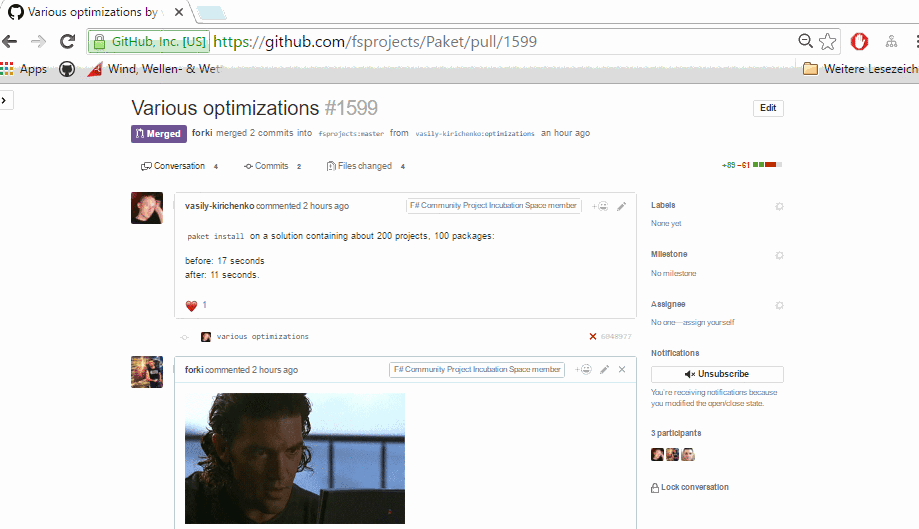
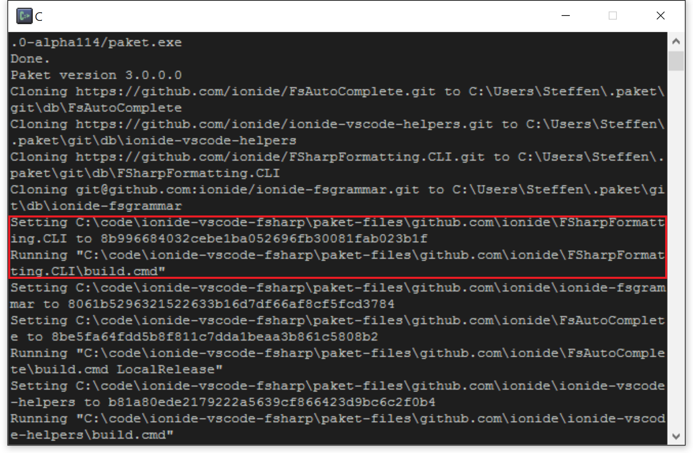
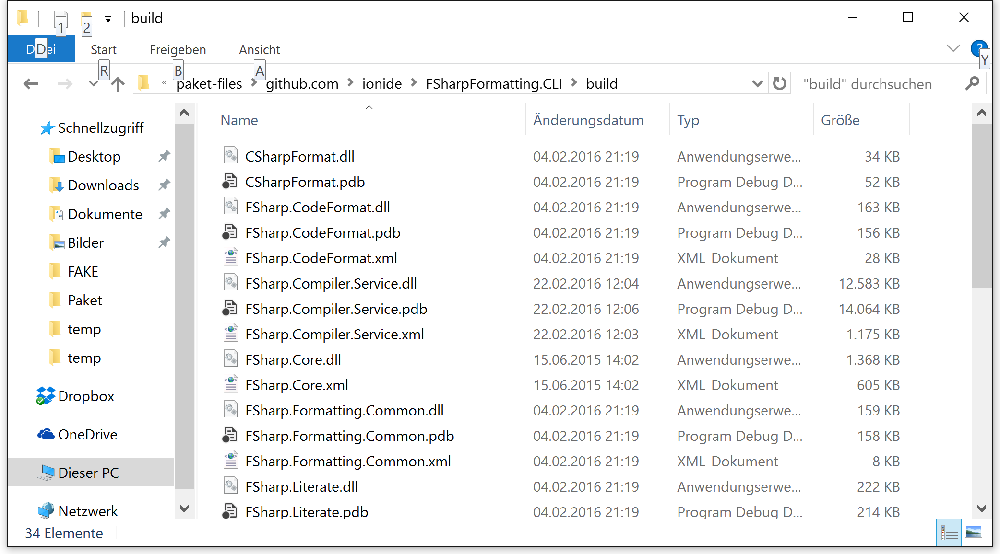

val id : x:'T -> 'T
Full name: Microsoft.FSharp.Core.Operators.id
Full name: Microsoft.FSharp.Core.Operators.id
Paket + git = ❤
- Steffen Forkmann
- @sforkmann
- github/forki
Quiz: What's this?
1: 2: 3: 4: 5: 6: 7: 8: 9: 10: 11: 12: 13: |
|
What is Paket?
- Dependency manager for all .NET and Mono projects
- Version 1.0 released at F# eXchange 2015
Why another package manager?
- .NET ecosystem has already NuGet
- Integrated in Visual Studio and Xamarin Studio
- nuget.org is etablished package feed

Why another package manager?
- NuGet has no global view of your dependencies
packages.configfiles are spread over all project folders- As a sample MassTransit:

Why another package manager?
- NuGet has no concept of transitive dependencies
1: 2: 3: 4: 5: 6: 7: 8: 9: 10: 11: 12: 13: 14: 15: 16: 17: 18: 19: 20: |
|
Why another package manager?
- NuGet puts the package version in the path
- Updates require manual work (at least if you use .fsx):
1: 2: 3: 4: 5: 6: 7: 8: 9: |
|
Why don't you contribute to NuGet?
- NuGet is open source, but managed by Microsoft
- Most changes are breaking (e.g. version number in path)
- NuGet team made clear they won't accept these changes
Paket - Project Principles
- Integrate well into the existing NuGet ecosystem
- Make things work with minimal tooling (plain text files)
- Make it work on all platforms
- Automate everything
- Create a nice community
Paket - Community
Paket - Community
Paket - Community
Paket - Community

Paket file structure
paket.dependencies: Global definition of dependenciespaket.lock: List of used versions for all dependenciespaket.references: Dependency definition per projectpaket.template: Package definition for new packages
paket.dependencies
- Specifies all direct dependencies
- Manually editable (or via paket.exe commands)
1: 2: 3: 4: 5: 6: |
|
paket.lock
- Graph of used versions for all dependencies
- Compareable to a unified view of all
packages.config - Automatically computed from
paket.dependencies:
1: 2: 3: 4: 5: 6: 7: 8: 9: 10: 11: 12: |
|
paket.references
- Specifies which dependencies are used in a given project
- Compareable to
packages.config, but without versions - Only direct dependencies need to be listed
- Manually editable
1: 2: 3: |
|
Paket file structure

Installing packages
1:
|
|
- Computes
paket.lockbased onpaket.dependencies - Restores all direct and transitive dependencies
- Processes all projects and adds references to the libraries
Checking for updates
1:
|
|
- Lists all dependencies that have newer versions available:

Updating packages
1:
|
|
- Recomputes
paket.lockbased onpaket.dependencies - Updates all versions to the latest matching all restrictions
- Runs
paket install
Restoring packages
1:
|
|
- Restores all direct and indirect dependencies
- Will not change
paket.lockfile - Can be used for CI build or from inside Visual Studio
Convert from NuGet
1:
|
|
-
Finds all
packages.configfiles- Converts them to
paket.referencesfiles - Generates
paket.dependenciesfile - Computes
paket.lockfile
- Converts them to
- Visual Studio package restore process will be converted
- Runs
paket install
Simplify dependencies
1:
|
|
-
Computes transitive dependencies from
paket.lockfile- Removes these from
paket.dependencies - Removes these
paket.references
- Removes these from
- Especially useful after conversion from NuGet (Sample)
Bootstrapping
- Don't commit
paket.exeto your repository - Bootstrapper is available for download
- Bootstrapper allows to download latest
paket.exe - Can be used for CI build or from inside Visual Studio
Recap: Basic structure
- Command line tool over plain text
- Direct vs. transitive dependencies
- Only one version of a package
Source code dependencies
- Allow to reference plain source code files
-
Available for:
- GitHub
- GitHub gists
- HTTP resources
Source code dependencies
GitHub sample (1)
- Add dependency to the
paket.dependenciesfile
1:
|
|
- Also add a file reference to a
paket.referencesfile
1:
|
|
Source code dependencies
GitHub sample (2)
paket installwill add a new section topaket.lock:
1: 2: 3: |
|
paket installwill also add a reference to the project:

Source code dependencies
Use case - "Type Provider definition"
- For F# Type Providers you need a couple of helper files
- It was painful to keep these up-to-date
- Reference F# Type Provider files in
paket.dependencies:
1: 2: 3: |
|
- Add the files to the Type Provider's
paket.references:
1: 2: 3: |
|
Source code dependencies
Use case - "Stanford.NLP.NET"
1: 2: 3: 4: 5: 6: 7: 8: 9: 10: |
|
Dependency Groups
- Allow for better organization of dependencies
- Enable easier conflict resolution
1: 2: 3: 4: 5: 6: 7: 8: 9: 10: 11: 12: 13: 14: |
|
Dependency Groups (paket.lock)
1: 2: 3: 4: 5: 6: 7: 8: 9: 10: 11: 12: 13: 14: 15: 16: |
|
Quiz: What's this?
1: 2: 3: 4: 5: 6: 7: 8: 9: 10: 11: 12: 13: |
|
leftpad
1: 2: 3: 4: 5: 6: 7: 8: 9: 10: 11: 12: 13: 14: 15: 16: 17: |
|
"How one developer just broke Node, Babel and thousands of projects in 11 lines of JavaScript"
http://www.theregister.co.uk/2016/03/23/npm_left_pad_chaos/
This can happen to you!
Additional Caches
(v3 Feature)
1: 2: 3: 4: 5: 6: |
|
git dependencies
(v3 Feature)
1: 2: 3: 4: 5: 6: |
|
git dependencies as NuGet source
(v3 Feature)
1: 2: 3: |
|
git dependencies as NuGet source
(v3 Feature)

1: 2: 3: 4: |
|
git dependencies
Use case - "Ionide"
git dependencies
Use case - "Ionide"

1: 2: 3: 4: 5: 6: 7: 8: 9: 10: |
|
git dependencies
Use case - "Ionide"
1: 2: 3: 4: 5: 6: 7: 8: 9: 10: 11: 12: 13: 14: 15: 16: 17: 18: |
|
git dependencies
Use case - "Ionide"

git dependencies
Use case - "Ionide"
git dependencies
Use case - "Ionide"
git dependencies
Use case - "Bugfixing"
1: 2: 3: 4: 5: 6: |
|
Getting help
1:
|
|
- Visit the online documentation
- Create a GitHub issue
- Follow PaketManager on Twitter
Paket.VisualStudio

Paket.XamarinStudio

Paket.Atom
- Available in Atom's plugin manager

Paket.VSCode
- Available in VSCode's plugin manager

Paket.Emacs
- Project site: https://github.com/zzdtri/paket.el

Paket.VisualStudio
- Alpha version of VisualStudio plugin
ProjectScaffold
- Allows a simple one step build and release process
- Works with most build servers
- Compiles the application and runs all test projects
- Synchronizes AssemblyInfo files prior to compilation
- Generates API docs based on XML documentation
- Generates documentation based on Markdown files
- Generates and pushes NuGet packages
Thank you
- Take a look at https://github.com/fsprojects/Paket
- We take contributions!
- Slides are MIT licensed and made using FsReveal
- Send corrections to https://github.com/forki/PaketIntro
- Follow @PaketManager